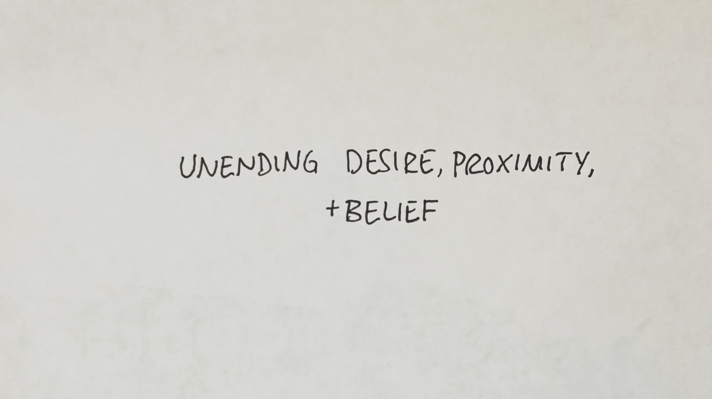
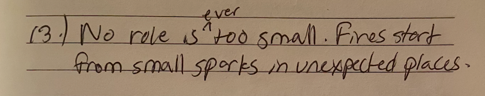
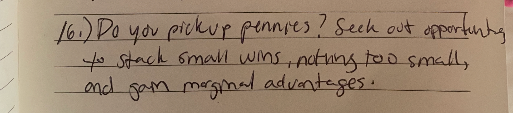
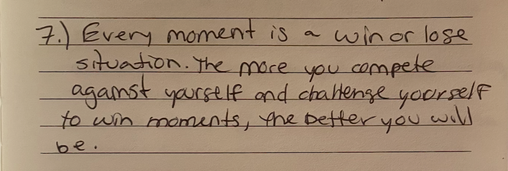
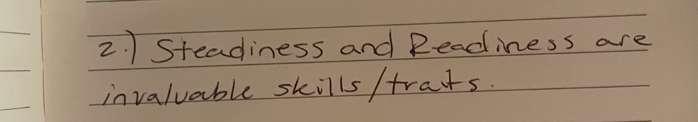
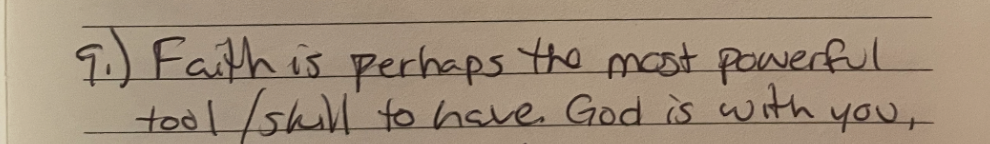

365 days ago, a close friend shared with me a few pages of handwritten notes. He'd just finished a season of professional basketball in the developmental league, making pennies on the dollar.
Last week he had 25 points in an NBA basketball game. That's the equivalent of a moon landing for an astronaut or a unicorn for an entrepreneur.
A lot can change in a year, but to say I could have predicted this is far fetched. That said, it should've been dead obvious. Here's why:
Unending Desire
While we were teammates in 2019, Cormac Ryan told me, "I am going to go after my NBA dream until the wheels fall off." At the time, it seemed unimaginable. But this commitment set the direction for his life. From there on out, each subsequent step and decision he made built toward that goal.
The most decorated American restaurateur, Thomas Keller, who turned The French Laundry into what it is today, emphasizes this concept of desire over passion:
"If you have a constant, unwavering desire to be a cook, then you'll be a great cook. If it's only about passion, sometimes you'll be good and sometimes you won't. You've got to come in every day with a strong desire. With passion, if you see the first asparagus of the springtime and you become passionate about it, so much the better, but three weeks later, when you've seen that asparagus every day now, passions have subsided. What's going to make you treat the asparagus the same? It's the desire." — Thomas Keller (via Michael Ferro)
Proximity
Proximity is incredibly underrated.
When he had the chance to make 7-figures overseas playing professional basketball, it was a non-starter. He chose to stay stateside around NBA organizations even if it meant a lesser role and significantly less money. This is important for two reasons.

1. It gives you the chance to learn from the very best and the confidence to know the gap isn't too wide. Every summer during college, Cormac would head to Las Vegas to train with the best in the world, and in doing so, would supercharge a few weeks worth of work. There would be a noticeable step function increase in his abilities. Imagine if those few weeks became your everyday reality? You become unstoppable.
This is something I've have the privilege to experience myself a bit (and am hoping to do more and more). By positioning yourself squarely next to the very best in the field, gives you a chance to win moments. Stack enough of these winning moments, and all of the sudden you're a person your previous self would have never been able to recognize.


2. When the opportunity arises (which it will if you stick around long enough), you will be physically present to have a chance. Then the question becomes, "What will you do with a chance?" That's when steadiness and readiness become especially important.

Belief
Belief in something bigger might be the most important ingredient in the recipe. It gives you the best chance to move from failure to failure without the loss of enthusiasm. It keeps you steady and ready.

And most of all, when things aren't going your way, faith precedes worry and it keeps you showing up.
And if you stay long enough, if you keep showing up, the moment has a way of finding you. So in whatever form it takes, take some time to believe. :)